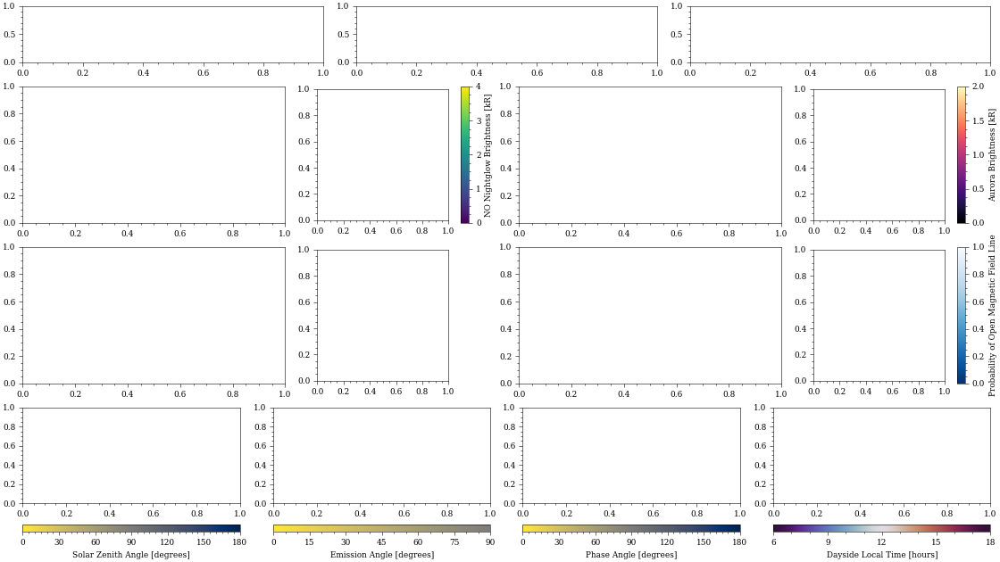

templates¶
This module provides templates for creating graphics.
- class pyuvs.graphics.templates.SegmentDetectorImage(n_swaths: int, height: float)[source]¶
Make a template of a detector image containing all data from a segment. This is broadcast into angular space so that the pixels are not warped. The data axis spans the figure.
- Parameters
n_swaths – The number of swaths present in the data.
height – The desired figure height [inches].
Examples
Visualize this template.
import matplotlib.pyplot as plt from pyuvs.graphics.templates import SegmentDetectorImage SegmentDetectorImage(6, 4) plt.show()
(Source code, png, hires.png, pdf)

- property figure: matplotlib.figure.Figure¶
Get the figure.
- Returns
The figure.
- Return type
plt.Figure
- property data_axis: matplotlib.axes._axes.Axes¶
Get the data axis, which spans the entire figure.
- Returns
The data axis.
- Return type
plt.Axes
{kind=link}
{kind=link}
- class pyuvs.graphics.templates.ApoapseMUVQuicklook(figure_width: float = 14)[source]¶
A class that creates a blank apoapse MUV quicklook.
- Parameters
figure_width (float) – The desired output figure width.
Notes
The figure width can theoretically be any value, but values less than 14 will compress the text in such a way that it’s unreadable.
Examples
Visualize this template.
import matplotlib.pyplot as plt from pyuvs.graphics.templates import ApoapseMUVQuicklook ApoapseMUVQuicklook() plt.show()
(Source code, png, hires.png, pdf)

{kind=link}
{kind=link}